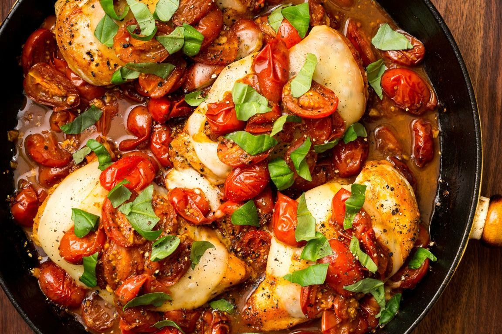
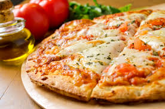
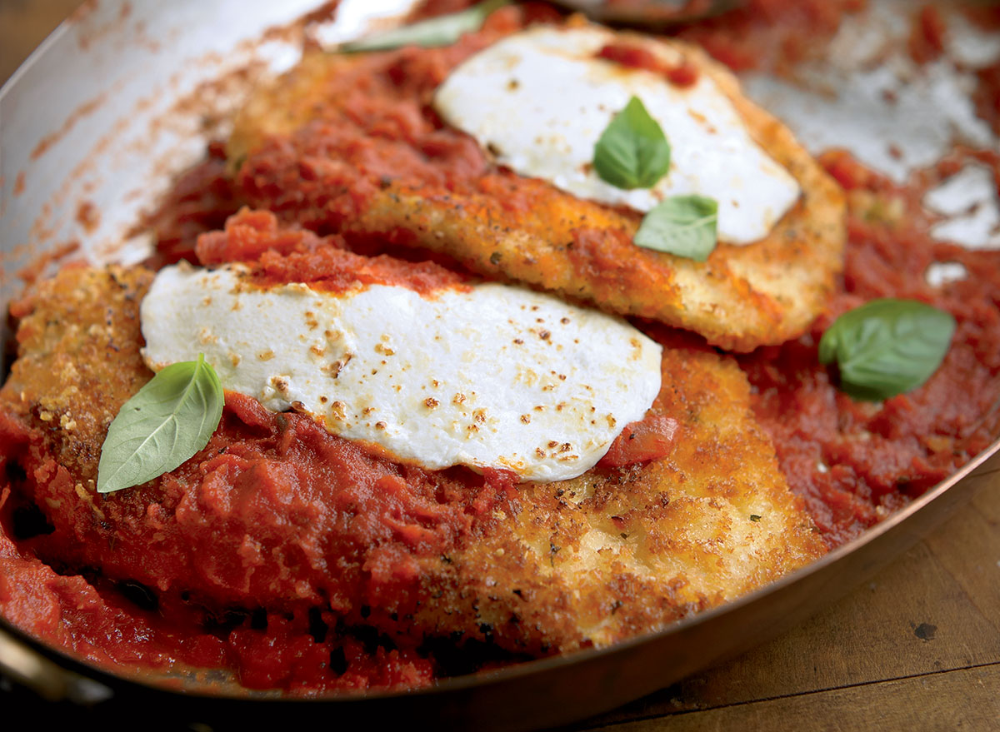
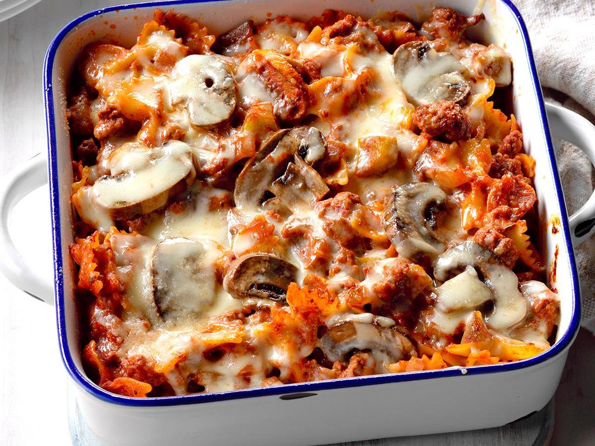
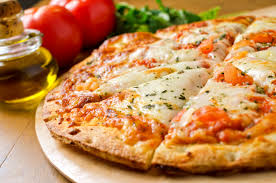
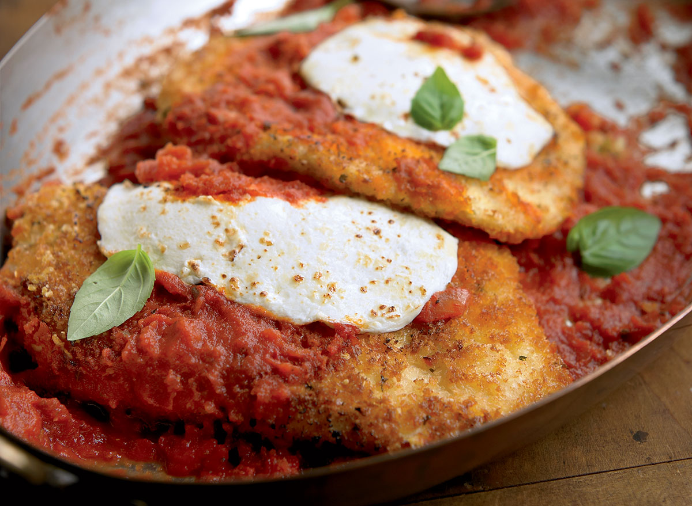
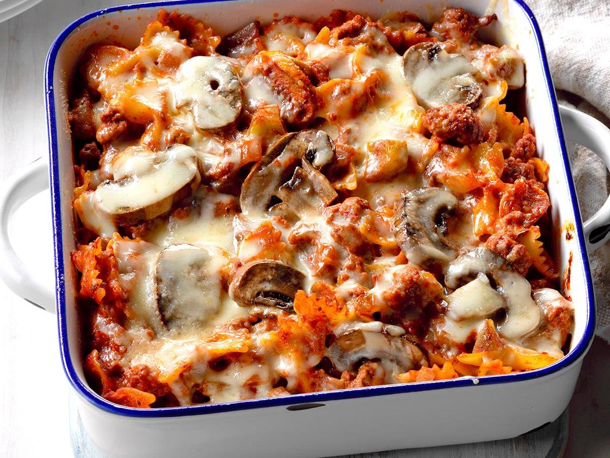

Italian Taste
Welcome everyone; here you are going to be the center of attention, since you will be in charge of one of the best Italian Restaurants in town. Therefore, you will have to decide the most suitable plates and drinks, which are going to be offered at your restaurant, so as to get the best menu designed. Remember that you must consider the typical ones in order to make your restaurant an authentic place to eat Italian food. Let's start with this delicious task! Are you starving? I hope so, because now you need to follow your instincts of taste.
 




